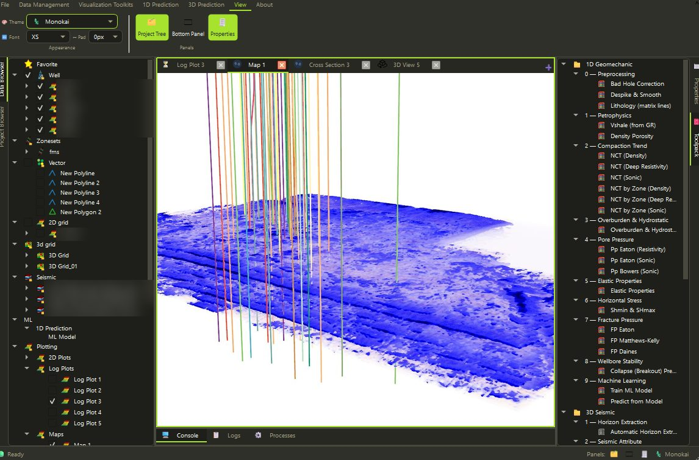
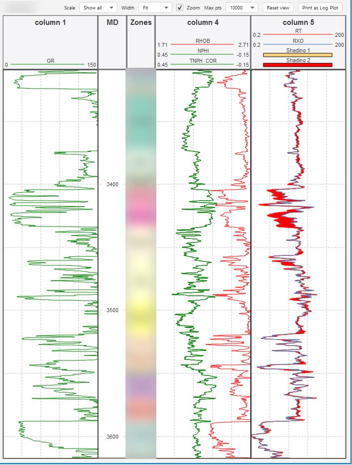
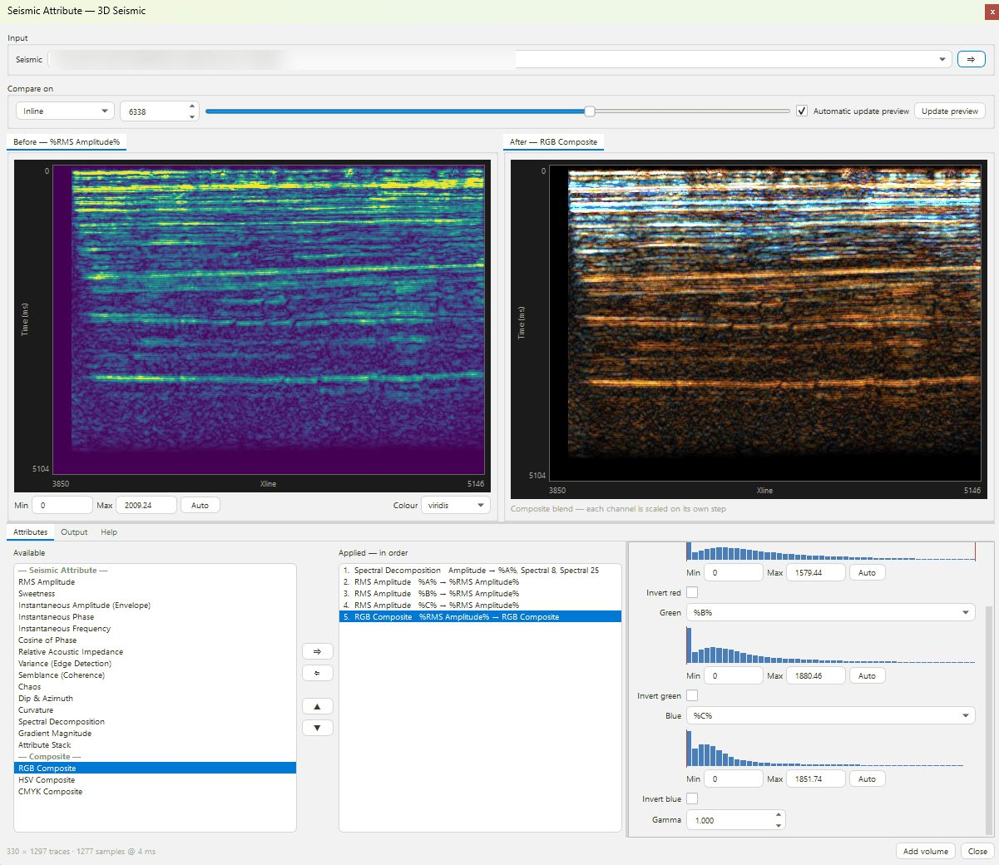
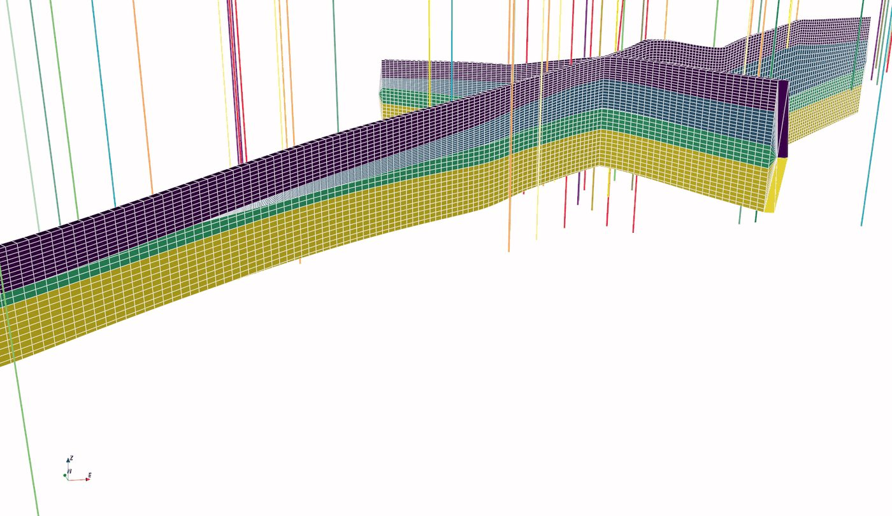
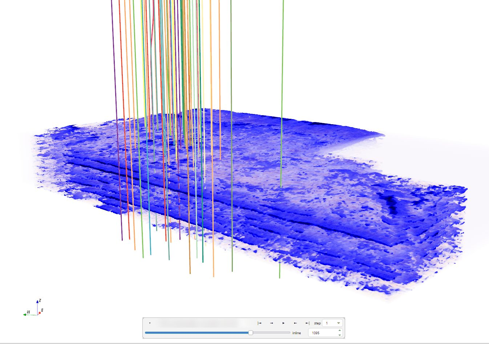

ESCA Geoscience builds software that lets geoscientists interpret wells, seismic and reservoir models together, in one application, from the first log to the 3-D model.
Subsurface work is still split across separate packages for petrophysics, seismic interpretation and reservoir modelling. Data is exported, re-imported and checked again at every step, and every hand-over is a chance to lose something.
ESCA Geoscience was founded to close those gaps. Our product, ESCA Subsurface, keeps well data, seismic and 3-D models in one project, so a change made by one discipline reaches the others straight away.
We develop the software in-house, release it for Windows workstations, and work directly with the geoscientists who use it.
Give every geoscientist one dependable tool for the whole subsurface workflow, from log analysis to reservoir model.
A single product family covering the subsurface end to end: interpretation, static modelling, geomechanics and fluid flow.
Every result can be traced to its data and checked against measurements. Projects stay in open, readable formats that belong to the client.
One desktop application for end-to-end subsurface geoscience. Wells, logs, zones, seismic volumes, surfaces and 3-D grids share a single project and a single data tree.

Each module works on the same project data. These screens are taken from ESCA Subsurface.

Log plots with zones, shading and lithology, and calculation tools for shale volume, porosity and saturation.

Fifteen attributes, chained into workflows and blended into RGB, HSV or CMYK composites, previewed before they are computed.

Pillar grids and layering, upscaled logs, variograms, and property modelling by kriging or sequential Gaussian simulation.

Wells, seismic slices, volume renderings, surfaces and grids together in one 3-D scene.
Industry-standard methods, with the measured data drawn beside every result.
| Discipline | Methods | Data |
|---|---|---|
| Petrophysics | Shale volume, density, neutron and sonic porosity, neutron-density crossplot, gas correction, lithology from matrix lines | LAS logs, core data |
| Stratigraphy | Zone sets, automatic marker correlation along well paths, cross sections | Formation tops, deviation surveys |
| Seismic | Horizon and fault interpretation, well–seismic tie, attributes, volume rendering | SEG-Y and ZGY, 2-D and 3-D |
| Reservoir modelling | Pillar grids, upscaling, variograms, simple, ordinary and universal kriging, SGS | Surfaces, ZMap+ and CPS-3 grids |
| Pore pressure | Overburden, compaction trends, Eaton and Bowers pore pressure, Eaton, Matthews-Kelly and Daines fracture gradient, mud window | Pressure tests, LOT and FIT |
| Machine learning | Regression, facies classification and clustering on well logs | Any logged curve |
Exploration, appraisal and development teams interpreting wells and seismic and building reservoir models.
Reservoir characterisation and pressure assessment for geothermal projects and carbon storage sites.
Independent geoscience consultants who need a full workflow on one workstation.
Teaching and research in petroleum geoscience, geophysics and reservoir engineering.
Petrophysics, stratigraphy, seismic interpretation and static reservoir modelling.
Stress, rock strength and wellbore stability, built on the same platform and project.
Taking the static model into flow, from the first log to production.
Tell us about your field and your workflow. We can arrange a live demonstration, a trial licence, or a pilot on one of your projects.